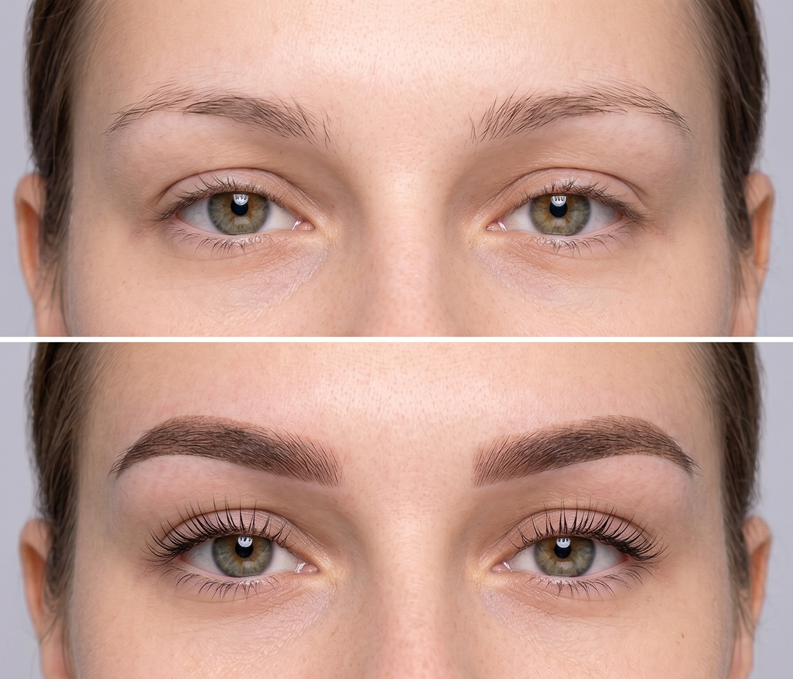

Pudrové obočí

Vše, co potřebujete vědět o Pudrovém obočí
Pudrové obočí je vyhledávaná technika permanentního make-upu, která vaší tváři dodá tvar, definici a plnost. Pomocí speciálního strojku a kvalitního pigmentu aplikuje stylista jemné stínování do svrchních vrstev kůže. Jakmile proces hojení skončí, pigment se usadí a vytvoří měkký, přirozený „pudrový“ efekt. Vy se tak můžete každé ráno probudit s dokonalým obočím bez nutnosti dalšího líčení.
V mém studiu je mým hlavním cílem dosažení co nejpřirozenějších výsledků při zachování maximálního zdraví vaší pokožky. Celým procesem vás krok za krokem provedu, abyste se cítili komfortně a odcházeli s obočím, které budete milovat.
Co vás čeká během návštěvy:
- Individuální vyměření: Vytvořím tvar přesně na míru vašim rysům.
- Barevná typologie: Vyberu pigment, který dokonale splyne s tónem a podtónem vaší pleti.
- Precizní aplikace: Pomocí techniky PowderBrow dodám obočí požadovanou plnost a tvar.
- Péče po zákroku: Vysvětlím vám, jak o obočí pečovat, aby výsledek vydržel co nejdéle.
Jak dlouho vydrží výsledek?
Efekt pudrového obočí obvykle přetrvává 1 až 3 roky, než je potřeba podstoupit obnovovací proceduru. Přesná doba závisí na typu vaší pleti, zvoleném odstínu pigmentu a vašem životním stylu. Klíčem k dlouhodobě krásnému vzhledu je pečlivé dodržování našich pokynů pro následnou péči.
Zhruba 6 až 8 týdnů po prvním sezení je nezbytná první korekce. Během ní se doplní a ztmaví místa, která se mohla zahojit příliš světle, čímž se zajistí rovnoměrný a plný vzhled.
Nenechte se zmást termínem „semipermanentní“. Jakmile je pigment vpraven do kůže, vždy se jedná o trvalý zákrok. I když při správném provedení pudrového obočí zasahujeme pouze do svrchních vrstev kůže a barva časem postupně bledne, stále jde o formu tetování.